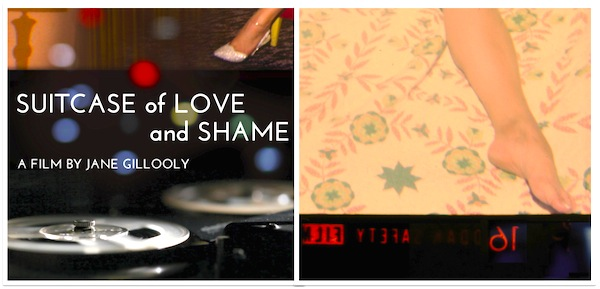

NYU & IU co-present an Orphan Film Symposium
September 26-28, 2013 @ Indiana University Bloomington
Theme: Materiality and the Moving Image
Keynote: Tom Gunning (U of Chicago)a 3-day, 3-night Orphan Film Symposium
Special opening night program
Films for Cello
An evening withfilmmaker Bill Morrison & Opus 3 artist Maya Beiser
Light Is Calling (2004) music by Michael Gordon
Cello Counterpoint (2005) music by Steve Reich for Maya Beiser
Just Ancient Loops (2012) music by Michael Harrison for Maya Beiser
and
world premiere of the film All Vows (2013) music (2006) by Michael Gordon
Indiana University Cinema and the Robert A. and Sandra S. Borns Jewish Studies Program commissioned the film All Vows. The project is supported by Indiana University’s New Frontiers in the Arts & Humanities Program and College of Arts & Humanities Institute (CAHI).
. . . . . Other premieres at Orphans Midwest include:
■ ▲ Newly restored A Frontier Post (Fox, 1925) a never-released short about the "buffalo soliders" of the U.S. 10th Cavalry; with a commissioned score performed by Gabriel Gutierrez Arellano. Presented by Greg Wilsbacher (University of South Carolina Moving Image Research Collections).
● ■ LOC's digital restoration of the newly-realized complete version of Edison Kinetoscopic Record of a Sneeze (1894), presented by Mike Mashon (Library of Congress) and Dan Streible (NYU Cinema Studies/MIAP).
■ + New excerpts of work in progress on reconstructing the fragments of Hell Bound Train (1929-30) and Verdict, Not Guilty (1930-33) in the Eloyce Gist Collection at the Library of Congress
▲ ▲ HIX PIX MIX: An evening of musical wonders captured on film and video from regional archives and private collections of the American Midwest and South, curated by archivist and musician Kelli Hix (Country Music Hall of Fame and Museum)
■ + New excerpts of work in progress on reconstructing the fragments of Hell Bound Train (1929-30) and Verdict, Not Guilty (1930-33) in the Eloyce Gist Collection at the Library of Congress
. . . . . And
+ ● "Placing Orphan Films," a full day of presentations examining how new categorizations are affecting media studies, organized by SCMS's Nontheatrical Film and Media Scholarly Interest Group. Led by Martin Johnson (Catholic U) and Andy Uhrich (IU).▲ ▲ HIX PIX MIX: An evening of musical wonders captured on film and video from regional archives and private collections of the American Midwest and South, curated by archivist and musician Kelli Hix (Country Music Hall of Fame and Museum)
Hear more than 60 presenters, see dozens of resurrected films and videos!
Live music by LYLAS, Josephine McRobbie, and others
► Click to JOIN US in Bloomington!
. . . . . p.s.
+ The new documentary

• • introduced by suitcase discoverer and archivist Albert Steg (Center for Home Movies). • • Q&A with filmmaker Jane Gillooly.
• • Jeff Martin (IMAP — Independent Media Arts Preservation) moderates a session with presentations by Casey, Elnabli & Jimenez:
• • Mona Jimenez (NYU Moving Image Archiving and Preservation Program) on early video processing tools by artists and technologists of the 1960s and 1970s
• • Mike Casey on IU’s Media Preservation Initiative
• • Stefan Elnabli (Northwestern U) The Open-Source Avalon Media System: Digitizing 2,425 16mm Football Films (1929-89)
• • Heddi Vaughan Siebel on Anthony Fiala’s Arctic Expedition Films, 1901-1905
• • Alex Kupfer (NYU) History of University Extension Programs and as Nontheatrical Film Producers and Distributors
• • Natasha Ritsma (Kenyon College) History of the IU Audio-Visual Center
• • Marsha Gordon (NCSU) and Allyson Nadia Field (UCLA) on Felicia (ca. 1965) and Felicia Bragg, a teenage girl’s perspective on living in Watts
• • Donald Crafton (Notre Dame) and Andrew Beckman (Studebaker National Museum) on Partnership of Faith (1949, Studebaker Corp.)
• • Gregory A. Waller (IU) a home movie from Brown County
• • James Paasche (IU) on Transportation Underground: The Story of a Pipeline (Robert Young, for Indiana Farm Bureau Co-Op Association, 1953)
• • Jennifer Reeves (Cooper Union) My Anti-Landfill Film: Landfill 16 (2011), a hand-painted 16mm film derived from 16mm film fragments excavated from a landfill.
• • Natasha Ritsma (Kenyon College) History of the IU Audio-Visual Center
• • Marsha Gordon (NCSU) and Allyson Nadia Field (UCLA) on Felicia (ca. 1965) and Felicia Bragg, a teenage girl’s perspective on living in Watts
• • Donald Crafton (Notre Dame) and Andrew Beckman (Studebaker National Museum) on Partnership of Faith (1949, Studebaker Corp.)
• • Gregory A. Waller (IU) a home movie from Brown County
• • James Paasche (IU) on Transportation Underground: The Story of a Pipeline (Robert Young, for Indiana Farm Bureau Co-Op Association, 1953)
• • Jennifer Reeves (Cooper Union) My Anti-Landfill Film: Landfill 16 (2011), a hand-painted 16mm film derived from 16mm film fragments excavated from a landfill.
. . . . . Eyes on the Prize, Henry Hampton Collection, Nadia Ghasedi (Washington U)
. . . . . Kartemquin Films, Carolyn Faber (Kartemquin Archive project)
. . . . . Peter Bogdanovich Collection, IU Lilly Library, Noelle Griffis (IU)
• • from the Kinsey Institute Film Archive:
. . . . . Eric Schaefer (Emerson College), Liana Zhou (IU), Russell Sheaffer (IU), Joseph Slade (Ohio U) on William Mishkin and The Orgy at Lil’s Place (1963) -- including a special midnight screening [!] of this rediscovery of the Kinsey Institute Film Archive, with a trailer for Andy Milligan's Fleshpot on 42nd Street (1972).
• • from the IU Black Film Center/Archive:
. . . . . Brian Graney and Jacqueline Stewart (Chicago U) Early Black Film Artifacts as Material Evidence: Digital Regeneration
. . . . . S. Torriano Berry (Howard U) on reconstructing James and Eloyce Gist’s Hell Bound Train (1929-30) and Verdict Not Guilty (1930-33) at the Library of Congress
• • Craig Kridel (Museum of Education, University of South Carolina) Alice Keilher and the Human Relations Film Series, 1937-1942. Screening: a rare original 16mm print from the HR series, Fury (lynching) (1939, edited by Helen van Dongen from Fritz Lang's 1936 MGM film with Spencer Tracy, Fury) 17’
• • Andy Uhrich (IU) The Film Group of Chicago: Advertising Films and Verité Documentary of the 1960s and 70s
• • Greg Wilsbacher (IU alum and USC MIRC curator) introduces a screening of Fox Movietone News outtakes, Indiana University Graduation (June 10, 1929), featuring the IU Marching 100 and commencement remarks by IU President (later governor) Paul V. McNutt.
• • Andrea J. Kelley (IU) Hoagy Carmichael Soundies from the Archives of Traditional Music: Hong Kong Blues (1941).
• • Kit Hughes introduces Wisconsin Center for Film and Theater Research's Emile de Antonio Collection: trailers for Point of Order! (1964, German-language edition) and Millhouse: A White Comedy (1971)
• • Tennessee Archive of Moving Image and Sound presents the band Kincaid on Makin’ Music (WBIR-TV, Knoxville, 1983)
• • Anne Wells (Chicago Film Archives): Park Band (Hedman-Gray, Inc., ca. 1965) and “Close to You” by The Carpenters (David Strutzel, 1971)
• • Carolyn Faber (Kartemquin Films): Anonymous Artists of America (Gordon Quinn and Jerry Temaner, 1970)
AAA with early analog synthesizer
• • Greg Pierce (Orgone Archive): Sonambients: The Sound Sculpture of Harry Bertoia (Jeffrey Eger, 1971)
• • Garden Gates: performing live with a collage of oceanographic films from IU Libraries Film Archive, assembled by Josephine McRobbie
• • Andy Uhrich (Center for Home Movies): Blanche’s Recital (Arthur H. Smith, 1977), with live accompaniment by Lylas (Nashville, Tennessee)
• • Kelli Hix (Country Music Hall of Fame and Museum): Super 8 Kodachrome home movie of Dolly Parton, Porter Wagoner, and other country music stars in Anderson, Indiana (1971)
• • Jake Austen (Roctober Productions): Chic-A-Go-Go highlights (Chicago Access Network Television, 1996-2013)
Chic-A-Go-Go: "Chicago's dance show for kids of all ages"
• • Sara Chapman (Media Burn Independent Video Archive): Cheat-U-Fair (Columbia College Visual Production Seminar: Carl German, Thomas Phillips, Bruce Real, Scott Rosenthal, Marsha Rudak, Bob Schordje, and Al Stoncius; instructor Jim Passin, 1980)
• • Liz Coffey (Harvard Film Archive): Honky Tonk Bud (Scott Laster, 1986)
• • Asia Harman (IU Libraries Film Archive): Hoosier Promenade (Janet R. MacLean; IU Audio-Visual Center, 1957)
• • from the IU Black Film Center/Archive:
. . . . . Brian Graney and Jacqueline Stewart (Chicago U) Early Black Film Artifacts as Material Evidence: Digital Regeneration
. . . . . S. Torriano Berry (Howard U) on reconstructing James and Eloyce Gist’s Hell Bound Train (1929-30) and Verdict Not Guilty (1930-33) at the Library of Congress
• • Craig Kridel (Museum of Education, University of South Carolina) Alice Keilher and the Human Relations Film Series, 1937-1942. Screening: a rare original 16mm print from the HR series, Fury (lynching) (1939, edited by Helen van Dongen from Fritz Lang's 1936 MGM film with Spencer Tracy, Fury) 17’
• • Greg Wilsbacher (IU alum and USC MIRC curator) introduces a screening of Fox Movietone News outtakes, Indiana University Graduation (June 10, 1929), featuring the IU Marching 100 and commencement remarks by IU President (later governor) Paul V. McNutt.
• • Andrea J. Kelley (IU) Hoagy Carmichael Soundies from the Archives of Traditional Music: Hong Kong Blues (1941).
• • Kit Hughes introduces Wisconsin Center for Film and Theater Research's Emile de Antonio Collection: trailers for Point of Order! (1964, German-language edition) and Millhouse: A White Comedy (1971)
• • Tennessee Archive of Moving Image and Sound presents the band Kincaid on Makin’ Music (WBIR-TV, Knoxville, 1983)
• • Anne Wells (Chicago Film Archives): Park Band (Hedman-Gray, Inc., ca. 1965) and “Close to You” by The Carpenters (David Strutzel, 1971)
• • Carolyn Faber (Kartemquin Films): Anonymous Artists of America (Gordon Quinn and Jerry Temaner, 1970)
AAA with early analog synthesizer
• • Garden Gates: performing live with a collage of oceanographic films from IU Libraries Film Archive, assembled by Josephine McRobbie
• • Andy Uhrich (Center for Home Movies): Blanche’s Recital (Arthur H. Smith, 1977), with live accompaniment by Lylas (Nashville, Tennessee)
• • Kelli Hix (Country Music Hall of Fame and Museum): Super 8 Kodachrome home movie of Dolly Parton, Porter Wagoner, and other country music stars in Anderson, Indiana (1971)
• • Jake Austen (Roctober Productions): Chic-A-Go-Go highlights (Chicago Access Network Television, 1996-2013)
Chic-A-Go-Go: "Chicago's dance show for kids of all ages"
• • Sara Chapman (Media Burn Independent Video Archive): Cheat-U-Fair (Columbia College Visual Production Seminar: Carl German, Thomas Phillips, Bruce Real, Scott Rosenthal, Marsha Rudak, Bob Schordje, and Al Stoncius; instructor Jim Passin, 1980)
• • Liz Coffey (Harvard Film Archive): Honky Tonk Bud (Scott Laster, 1986)
* * * * * * * * * * * * * * * * * * * * * * * * * * * * * * * * * * * * * *